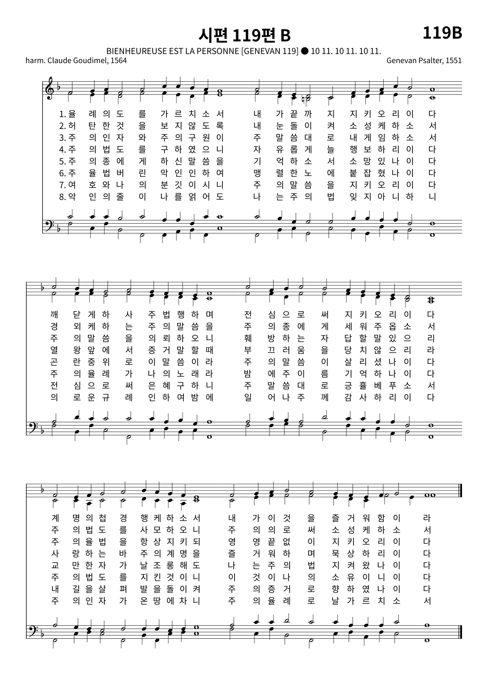

시편 119편 B
BIENHEUREUSE EST LA PERSONNE [GENEVAN 119] · 10 11. 10 11. 10 11.
곡조: Genevan Psalter, 1551 · 화성: Claude Goudimel, 1564 · 가사: 개역한글판 시편 119편 편역(AI 초벌 편역판 · 신학 감수 전) · 8절
시편 119편은 6곡으로 나누어 실었습니다: A B C D E F · 이 곡은 시편 119편 가사의 9~16번째 절입니다.
악보 PDF MusicXML(출력용) MusicXML(반주용, 전주·반복 포함) 개역한글 시편 119편 읽기
악보
← 시편 119편 A 목록반주 재생(준비 중)시편 119편 C →
가사
1절
율례의 도를 가르치소서
내가 끝까지 지키오리이다
깨닫게 하사 주 법 행하며
전심으로써 지키오리이다
계명의 첩경 행케 하소서
내가 이것을 즐거워함이라
율례의 도를 가르치소서
내가 끝까지 지키오리이다
깨닫게 하사 주 법 행하며
전심으로써 지키오리이다
계명의 첩경 행케 하소서
내가 이것을 즐거워함이라
2절
허탄한 것을 보지 않도록
내 눈 돌이켜 소성케 하소서
경외케 하는 주의 말씀을
주의 종에게 세워 주옵소서
주의 법도를 사모하오니
주의 의로써 소성케 하소서
허탄한 것을 보지 않도록
내 눈 돌이켜 소성케 하소서
경외케 하는 주의 말씀을
주의 종에게 세워 주옵소서
주의 법도를 사모하오니
주의 의로써 소성케 하소서
3절
주의 인자와 주의 구원이
주 말씀대로 내게 임하소서
주의 말씀을 의뢰하오니
훼방하는 자 답할 말 있으리
주의 율법을 항상 지키되
영영 끝없이 지키오리이다
주의 인자와 주의 구원이
주 말씀대로 내게 임하소서
주의 말씀을 의뢰하오니
훼방하는 자 답할 말 있으리
주의 율법을 항상 지키되
영영 끝없이 지키오리이다
4절
주의 법도를 구하였으니
자유롭게 늘 행보하리이다
열왕 앞에서 증거 말할 때
부끄러움을 당치 않으리라
사랑하는 바 주의 계명을
즐거워하며 묵상하리이다
주의 법도를 구하였으니
자유롭게 늘 행보하리이다
열왕 앞에서 증거 말할 때
부끄러움을 당치 않으리라
사랑하는 바 주의 계명을
즐거워하며 묵상하리이다
5절
주의 종에게 하신 말씀을
기억하소서 소망 있나이다
곤란 중 위로 이 말씀이라
주의 말씀이 살리셨나이다
교만한 자가 날 조롱해도
나는 주의 법 지켜왔나이다
주의 종에게 하신 말씀을
기억하소서 소망 있나이다
곤란 중 위로 이 말씀이라
주의 말씀이 살리셨나이다
교만한 자가 날 조롱해도
나는 주의 법 지켜왔나이다
6절
주 율법 버린 악인 인하여
맹렬한 노에 붙잡혔나이다
주의 율례가 나의 노래라
밤에 주 이름 기억하나이다
주의 법도를 지킨 것이니
이것이 나의 소유이니이다
주 율법 버린 악인 인하여
맹렬한 노에 붙잡혔나이다
주의 율례가 나의 노래라
밤에 주 이름 기억하나이다
주의 법도를 지킨 것이니
이것이 나의 소유이니이다
7절
여호와 나의 분깃이시니
주의 말씀을 지키오리이다
전심으로써 은혜 구하니
주 말씀대로 긍휼 베푸소서
내 길을 살펴 발을 돌이켜
주의 증거로 향하였나이다
여호와 나의 분깃이시니
주의 말씀을 지키오리이다
전심으로써 은혜 구하니
주 말씀대로 긍휼 베푸소서
내 길을 살펴 발을 돌이켜
주의 증거로 향하였나이다
8절
악인의 줄이 나를 얽어도
나는 주의 법 잊지 아니하니
의로운 규례 인하여 밤에
일어나 주께 감사하리이다
주의 인자가 온 땅에 차니
주의 율례로 날 가르치소서
악인의 줄이 나를 얽어도
나는 주의 법 잊지 아니하니
의로운 규례 인하여 밤에
일어나 주께 감사하리이다
주의 인자가 온 땅에 차니
주의 율례로 날 가르치소서